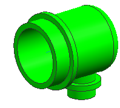
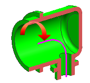

Open the part
-
Open rte1_built_in_path.

This 90 degree backshell attaches to the back of a circular connector that plugs into a rotary switch.
-
On the View toolbar, click Clip Work Section
 .
.
The clipped view exposes the sketch inside of the part.

You will use this sketch to construct a built-in path.